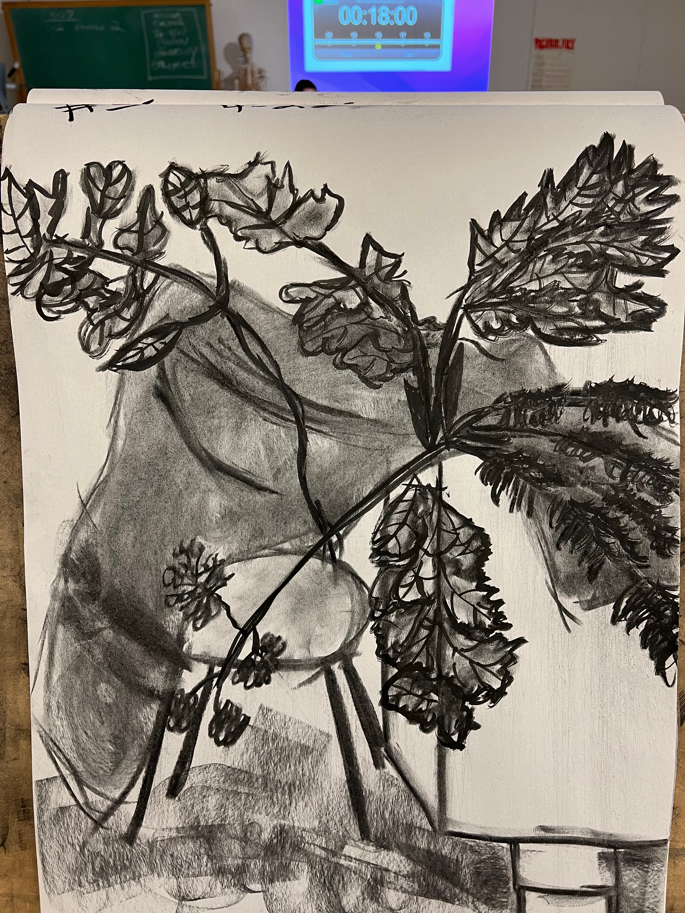
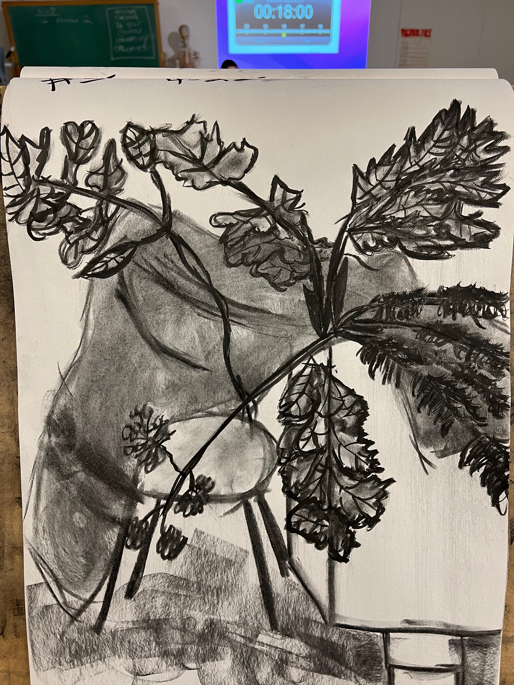

Art Work:
 

Over the course of this second semester I enrolled in Art 104. After signing up for this in the fall I thought there would be no way I would pass the class. Because I have no background in drawing and I was an obvious rookie. But I had excellent teaching and I bought into the process my professor was trying to implement. Slowly over time I became better, and better as the drawings became more complicated. These drawings above are some of my best work, it may not be the best but it is something I can be proud of.